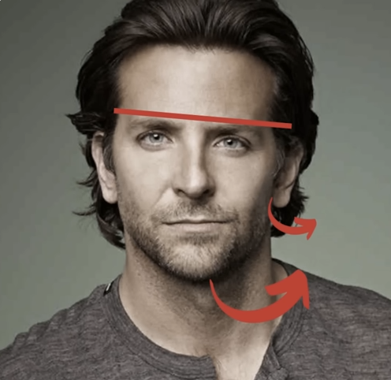
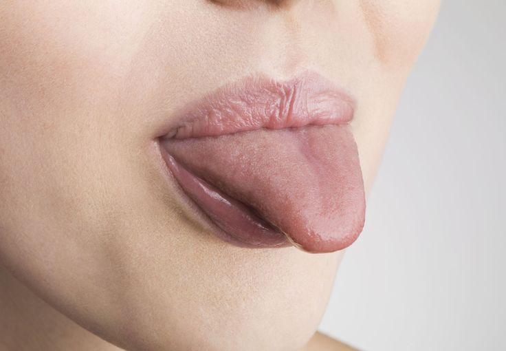
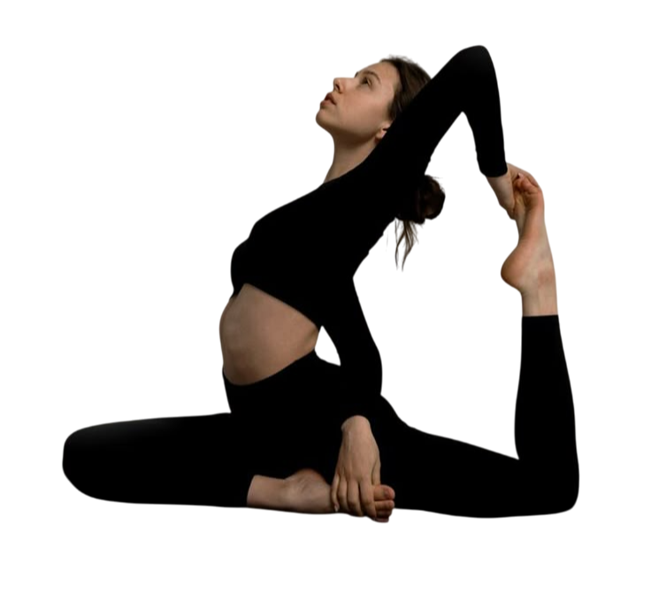
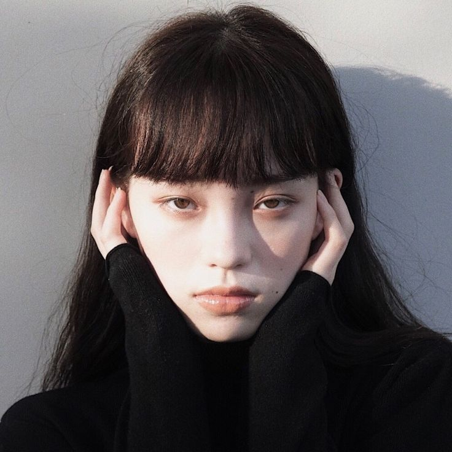

Symmetry
You’ve likely heard that a highly symmetrical face is attractive.
While symmetry alone does not imply attractiveness, it is still pertinent to uncover the role of symmetry in beauty.

Symmetry means that the left and right sides of something, like a face, are nearly identical.
Increasing facial symmetry increases facial attractiveness even if facial features remain the same.
This preference is thought to be evolutionary, as symmetry may signal good health and genetic quality.
Models, particularly those in high-fashion or beauty industries, are often selected based on their facial symmetry.
In nature, animals and humans that grow up healthy tend to develop more symmetrical features.
Thus, we find such features more attractive.
In contrast, asymmetry in humans increases with inbreeding, psychosis and premature birth, and in turn negatively affects facial beauty.

The images on the top row show the original faces whereas those on the bottom show the version where symmetry is enhanced. Participants of the study rated the faces on the bottom row as more attractive.
Visual appeal
When you see a face that’s symmetrical, your brain finds it easier to process and more pleasing to look at. It’s like looking at a neatly arranged bookshelf compared to a messy one—our brains just enjoy order!
Symmetry activates areas of the brain associated with reward and aesthetic appreciation.

Symmetrical faces are processed more quickly and effortlessly by the brain, a phenomenon known as cognitive fluency. This ease of processing is inherently pleasurable, which is why symmetrical faces are often perceived as more attractive.
Facial proportions and facial symmetry are separate yet interrelated entities
Proportion is the balance between the sizes of different parts and their relationship to the whole. Symmetry arises from this balance because equal and harmonious proportions create a mirrored,
pleasing appearance.

Without proportion and symmetry, a human face lacks harmony and seems unbalanced in a less aesthetically pleasing way.
Asymmetry
While symmetry is associated with beauty, it is also important to distinguish the types of asymmetry as the different kinds have varying impacts on beauty.
It is frequently cited that small asymmetries can make the face unique and more attractive, because it makes the face more human.
After all, no face is perfectly symmetrical.

In short, symmetry mainly enhances attractiveness when it displays health cues.
Just like how a well-lined eyebrow slit does not detract from facial aesthetics, certain asymmetric features enhances individuality.
In more technical terms, asymmetry can be classfied as fluctuating asymmetry and directional asymmetry, in which they have differing impacts on facial beauty.
Fluctuating asymmetry refers to small, random deviations from perfect symmetry in a face or body and are thought to arise from developmental instability, environmental stressors, or genetic factors during growth.
Directional asymmetry refers to systematic deviations from symmetry that are consistently biased to one side, such
right-side dominance in facial features. Studies have shown that the right side of the face is often slightly larger or more pronounced than the left side in many individuals.
This is a systematic, consistent pattern of asymmetry across the population.
Unlike fluctuating asymmetry, directional asymmetry in the face is generally not perceived as unattractive because it is a predictable and consistent pattern and does not signal poor health or genetic quality.
In fact, it may contribute to the uniqueness and character of a person’s face, which can enhance attractiveness
by making a face more memorable or distinctive without detracting from overall beauty.
Where Symmetry Matters
Certain regions of the face are more prone to asymmetry than others. Naturally, symmetry has a more profound impact on certain regions when determining facial beauty.

The likelihood of asymmetry in each region can be illustrated from the above visual.
Research shows that asymmetry tends to be the most common and of greatest extent in the jaw and least in the cranium as the jaw is subject to the most external forces (i.e. chewing) during development.
Symmetry is most salient in the eyes, followed by nose, then lips. Symmetry in these central features matter more in perceptions of attractiveness compared to peripheral features such as the ears.
The eye region (including eyebrows) is the most critical region for facial symmetry as it forms the central prominence of the face.
Uneven positioning, shape, or size of the eyes is highly noticeable and significantly impacts facial attractiveness and symmetry perception. (Rhodes, 2006).
Next, symmetry in the nose is particularly important because it anchors the midface and influences the perception of overall facial balance.
The mouth is another key feature for symmetry, particularly the alignment of the lips and the philtrum (the groove between the nose and upper lip).
The jawline and chin defines the lower face. A deviated chin or uneven jawline, can lead to an unbalanced appearance .
Asymmetry detracts from facial aesthetics mainly when it becomes apparent and signals abnormalities.
Is it possible to fix asymmetry?

The underlying bone structure and the facial muscles work together to create the final facial form. Hence, they determine facial symmetry. Moreover, the head is aligned with the rest of the muscles such as the spine and neck muscles, such that asymmetry in these regions beyond the head can impact facial symmetry.

Asymmetry can be present throughout the body, reaching the face and impacting aesthetics.

As conventionally handsome as Bradley Cooper is, his face presents a commonly found asymmetrical pattern - a more flared out ear, lower positioned eye and slightly deviated jaw on one side - which can be attributed to the underlying facial bones.

The above shows the likely facial bone structure for this pattern of asymmetry. The sphenoid bone is directly behind the upper jaw (maxilla), whereas the temporal bones are akin to hinges for the lower jaw (mandible), and the development of these facial bones determine facial symmetry.
Causes
Most concerns regarding asymmetry are over developmental asymmetry. Genetic factors are often times beyond our control, but postural reasons are significant yet frequently overlooked.

Orthodontics have found substantial postural impacts on facial symmetry. Poor posture where the pelvis is misaligned can affect the entire body, including the face, due to compensatory mechanisms in the spine and neck. There is significant correlation between cervical spine posture and craniofacial morphology, particularly in individuals with asymmetrical mandibular growth patterns.

Tongue posture (i.e. unbalanced mewing) can cause uneven forces to be applied on the upper jaw, influencing maxillary development. Often, individuals notice their good side - the side with a better side profile.

Unideal posture (e.g. more significant forward head posture on one side), coupled with muscle imbalances in the neck and back can hinder the tongue's ability to press evenly on the roof of the mouth, especially during swallowing. Given that swallowing is performed from 600-1000 times a day, the maxilla is subject to much force from the tongue.
Fixes
While genetic factors may be beyond one's control, optimising one's posture can benefit health and facial symmetry. It is crucial to first fix underlying postural problems.
Back and neck exercises, maintaining proper posture throughout the day, myofunctional therapy, or even seeking qualified orthodontists for advice may seem like small steps, but they go a long way.

Nevertheless, no face is perfectly symmetrical. Obessing over minor asymmetries is futile, since it is fine as long as they are not blatantly noticable. What an individual can do is maintain a healthy posture to facilitate proper, symmetrical facial development.
Here, we provide you the information to guide you on your glowup journey.
Glowing up is about small enhancements, but big results!
Learn More under the How to Glow Up section